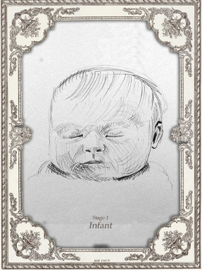
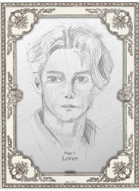
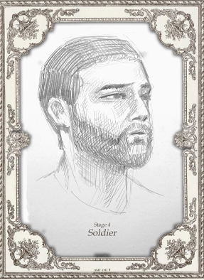
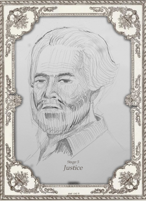

The Seven Ages of Man
Shakespeare's poem Seven Ages of Man compares the world to a stage where each person plays the part that has been assigned to them by God. Each person must go through the seven acts, which correspond to the seven phases of a man's life. Shakespeare categorized life into seven stages, each of which had distinct traits and attributes. Shakespeare views both men and women as actors performing on the stage of life. Depending on their age, they take on seven different roles on stage.
All the world’s a stage,
And all the men and women merely players;
They have their exits and their entrances,
And one man in his time plays many parts,
His acts being seven ages. At first the infant,
And all the men and women merely players;
They have their exits and their entrances,
And one man in his time plays many parts,
His acts being seven ages. At first the infant,

Mewlingand puking in the nurse’s arms;
And then the whining schoolboy, with his satchel
And shining morning face, creeping like snail
Unwillingly to school. And then the lover,

Sighing like furnace, with a woeful ballad
Made to his mistress’ eyebrow. Then a soldier,

Full of strange oaths, and bearded like the pard,
Jealous in honor, sudden and quick in quarrel,
Seeking the bubble reputation
Even in the cannon’s mouth. And then the justice,

In fair round belly with good capon lined,
With eyes severe and beard of formal cut,
Full of wise saws and modern instances;
And so he plays his part. The sixth age shifts

Into the lean and slippered pantaloon,
With spectacles on nose and pouch on side;
His youthful hose, well saved, a world too wide
For his shrunk shank; and his big manly voice,
Turning again toward childish treble, pipes
And whistles in his sound. Last scene of all,
 <
<
That ends this strange eventful history,
Is second childishness and mere oblivion,
Sans teeth, sans eyes, sans taste, sans everything.
Let's find out How well do you understand what you just read?

The Seven Ages of Man
William Shakespeare is an English poet and playwright known for his famous works and his great talent in writing. Included in his work is the monologue "All the world's a stage".
Shakespeare's most famous and well-liked monologue, "All the world's a stage," is related by the melancholic Jaques in As You Like It. This tribute to Shakespeare and Jaques' speech includes both the original language from the First Folio of 1623 as well as the text of the seven ages together with stunning images by Royal Academy artists.